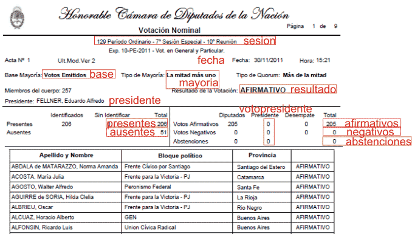
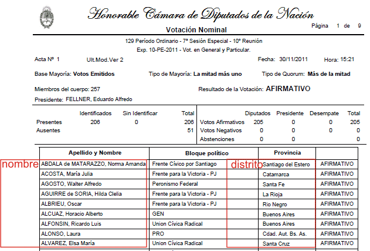
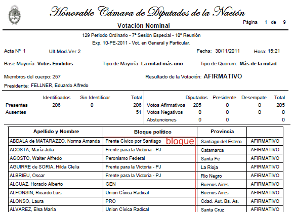
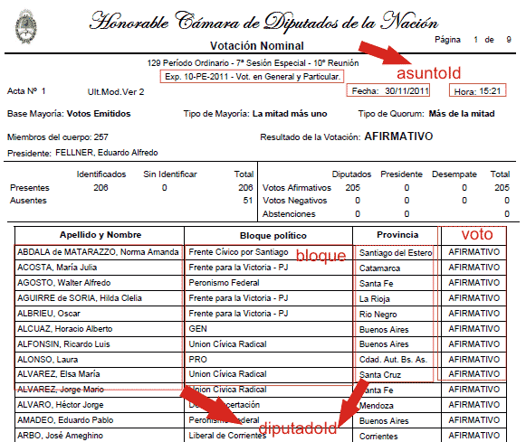

Esta aplicación utiliza D3.js y Fusion Tables de Google para generar visualizaciones de votaciones nominales de cuerpos legislativos detallando la posición asumida de cada uno de los integrantes, su pertenencia a bloques políticos, el resultado y otros datos de cada votación.
Para nuestro ejemplo hemos utilizado las actas de votaciones nominales de la Cámara de Diputados de la Nación Argentina, disponibles individualmente en documentos PDF. Cada acta contiene los datos generales de la votación y el voto de cada legislador. Volcamos toda esta información en cuatro tablas Fusion Tables: Diputados, Votaciones diputados, Bloques diputados, Asuntos dipuados, Senadores, Bloques senado, Votaciones senado, Asuntos senado.

| Campo | Tipo | Descripción |
|---|---|---|
| asuntoId | Número | Identificador de votación individual |
| sesion | Texto | Período parlamentario, Congreso o Legislatura, Sesión, Reunión |
| asunto | Texto | Expediente, orden del día, moción, proyecto o propuesta sujeta a votación |
| ano | Número | Año de la votación |
| fecha | Fecha/hora | Fecha de la votación en formato MM/DD/YYYY |
| hora | Fecha/hora | Hora de la votación en formato HH:MM |
| base | Texto | Población de integrantes del cuerpo sobre la que se cuenta la mayoría necesaria reglamentariamente para aprobar el asunto (Votos emitidos, Miembros del cuerpo) |
| mayoria | Texto | Mayoría mínima necesaria para aprobar el asunto (Más de la mitad, Dos tercios, Tres cuartos) |
| resultado | Texto | Resultado de la votación (AFIRMATIVO, NEGATIVO o ANULADA) |
| presidente | Texto | Nombre de quien preside el cuerpo |
| presentes | Número | Número absoluto de integrantes del cuerpo presentes |
| ausentes | Número | Número absoluto de integrantes del cuerpo ausentes |
| abstenciones | Número | Número absoluto de integrantes del cuerpo que se abstuvieron |
| afirmativos | Número | Número absoluto de integrantes del cuerpo que votaron afirmativamente |
| negativos | Número | Número absoluto de integrantes del cuerpo que votaron negativamente |
| votopresidente | Número | Voto del que presidió el cuerpo (0 = Afirmativo, 1 = Negativo, vacío = No votó) |
| titulo | Texto | Descripción del asunto objeto de votación. Es un campo adicional que permite más detalle. Puede obtenerse del acta o de otra fuente sistematizada (Diario de Sesiones, Boletín de Asuntos Tratados). |

En nuestro ejemplo la tabla diputados resulta de una consulta SELECT DISTINCT nombre, distrito de la tabla votaciones con los nombres de los legisladores en texto, antes de su codificación.
| Campo | Tipo | Descripción |
|---|---|---|
| diputadoId | Número | Identificador del legislador individual. Corresponde al campo diputado de la tabla votaciones |
| nombre | Texto | Apellido y nombres del legislador |
| distrito | Texto | Distrito del legislador |

| Campo | Tipo | Descripción |
|---|---|---|
| bloqueId | Número | Identificador de bloque. Corresponde al campo bloque de la tabla votaciones |
| bloque | Texto | Nombre del bloque |
| color | Texto | Color del bloque en código hexadecimal. El usuario puede asignar manualmente el color de cada bloque. Si el valor queda vacío, se le aplicará al bloque correspondiente uno de una escala de grises predeterminada |

| Campo | Tipo | Descripción |
|---|---|---|
| asuntoId | Número | Identificador de votación individual. Corresponde al campo asuntoId de la tabla asuntos |
| diputadoId | Número | Identificador de legislador individual. En nuestro ejemplo los individualizamos concatenando nombre y distrito |
| bloqueId | Número | Identificador de bloque individual |
| voto | Número | Posición del legislador en la votación. 0 = Afirmativo, 1 = Negativo, 2 = Abstención, 3 = Ausente |